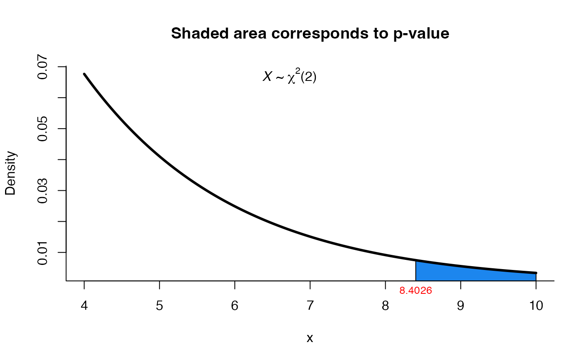

This function can be used to test \(H_0: \mu = \mu_0\) versus \(H_1: \mu\) not = \(\mu_0\) under \(\Sigma\) known or unkwon.
one_mean_vector_test(mu0, xbar, n, S = NULL, Sigma = NULL)
Arguments
| mu0 | a vector indicating the hypothesized value of \(\mu\). |
|---|---|
| xbar | a vector with the sample mean. |
| n | sample size. |
| S | a matrix with sample variances and covariances. |
| Sigma | the matrix \(\Sigma\) if known. |
Value
A list with class "htest" containing the following components:
the value of the statistic.
the degrees of freedom for the test.
the p-value for the test.
the estimated covariance matrix S.
a character string describing the alternative hypothesis.
a character string indicating what type of test was performed.
Details
The user must provide only one matrix, S to perform the T2 test or \(\Sigma\) to perform the X2 test. When \(\Sigma\) is unkwon, T2 is perform and two values are provided in the print output, the T2 and F value.
See also
one_covar_matrix_test for test \(\Sigma\) in a \(Np(\mu, \Sigma)\).
Examples
# Example 5.2.2 from Rencher & Christensen (2012) page 127 # Test H0: mu = (70, 170) versus H1: mu != (70, 170) # with known Sigma Sigma <- matrix(c(20, 100, 100, 1000), ncol=2, nrow=2) res1 <- one_mean_vector_test(mu0=c(70, 170), xbar=c(71.45, 164.7), n=20, Sigma=Sigma) res1#> #> X2 test for mean vector #> #> data: this test uses summarized data #> X2 = 8.4026, df = 2, p-value = 0.01498 #> alternative hypothesis: true mean vector is not equal to (70, 170) #> #> sample estimates: #> xbar_1 xbar_2 #> 71.45 164.70 #># Repeating the last example with raw data x1 <- c(69, 74, 68, 70, 72, 67, 66, 70, 76, 68, 72, 79, 74, 67, 66, 71, 74, 75, 75, 76) x2 <- c(153, 175, 155, 135, 172, 150, 115, 137, 200, 130, 140, 265, 185, 112, 140, 150, 165, 185, 210, 220) dt <- data.frame(x1, x2) mu0 <- c(70, 170) Sigma <- matrix(c(20, 100, 100, 1000), ncol=2, nrow=2) res2 <- one_mean_vector_test(mu0=mu0, xbar=colMeans(dt), n=nrow(dt), Sigma=Sigma) res2#> #> X2 test for mean vector #> #> data: this test uses summarized data #> X2 = 8.4026, df = 2, p-value = 0.01498 #> alternative hypothesis: true mean vector is not equal to (70, 170) #> #> sample estimates: #> xbar_1 xbar_2 #> 71.45 164.70 #># Example 5.2 from Johnson and Wichern (2012) page 214 # Test H0: mu = (4, 50, 10) versus H1: mu != (4, 50, 10) # with unknown Sigma S <- matrix(c(2.879, 10.010, -1.810, 10.010, 199.788, -5.640, -1.810, -5.640, 3.628), ncol=3, nrow=3) res3 <- one_mean_vector_test(mu0=c(4, 50, 10), xbar=c(4.640, 45.400, 9.965), n=20, S=S) res3#> #> T2 test for mean vector #> #> data: this test uses summarized data #> T2 = 9.7430, F = 2.9058, df1 = 3, df2 = 17, p-value = 0.06485 #> alternative hypothesis: true mean vector is not equal to (4, 50, 10) #> #> sample estimates: #> xbar_1 xbar_2 xbar_3 #> 4.640 45.400 9.965 #>